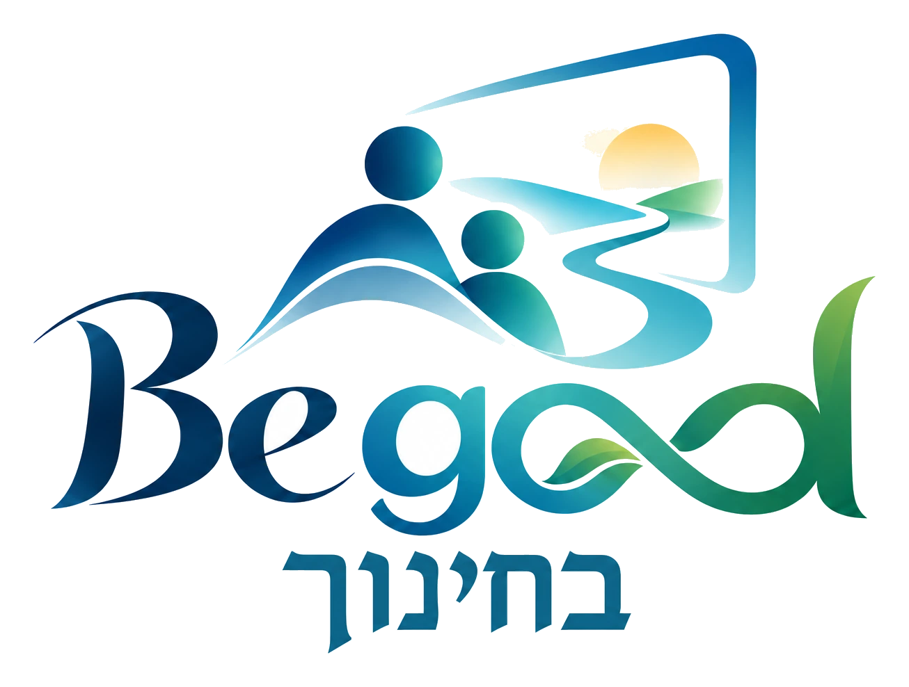

כך נראים תוצרים אמיתיים של הכלים: כפי שהם יוצאים מהמערכת, בלי עריכה. מוזמנות ומוזמנים לפתוח, לקרוא ולהתרשם.
Begood עדיין בפיתוח. הכלים והתוצרים משתפרים כל הזמן, ונשמח מאוד לשמוע מה עבד, מה לא ברור ומה חסר. לשליחת משוב
טוען את הדוגמאות...
כל הדוגמאות נבנו על מקרים בדויים, בלי תלמידים, מורים או מוסדות אמיתיים.
מוזמנות ומוזמנים ליצור קשר
ד״ר יעל שדה — yael.sade@gmail.com · 052-3969417